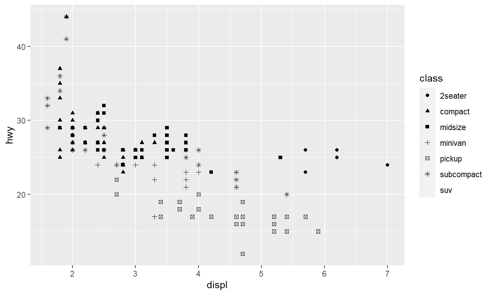
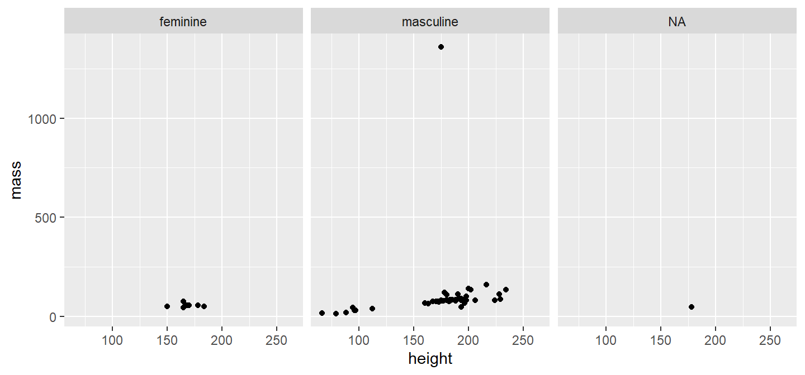
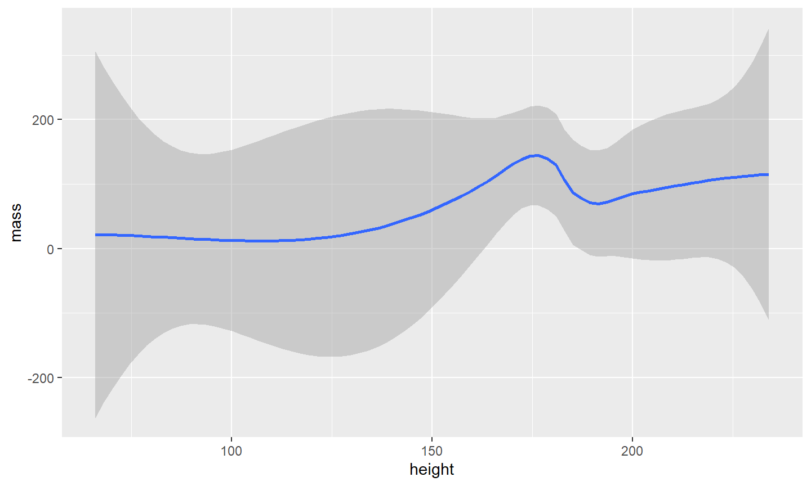
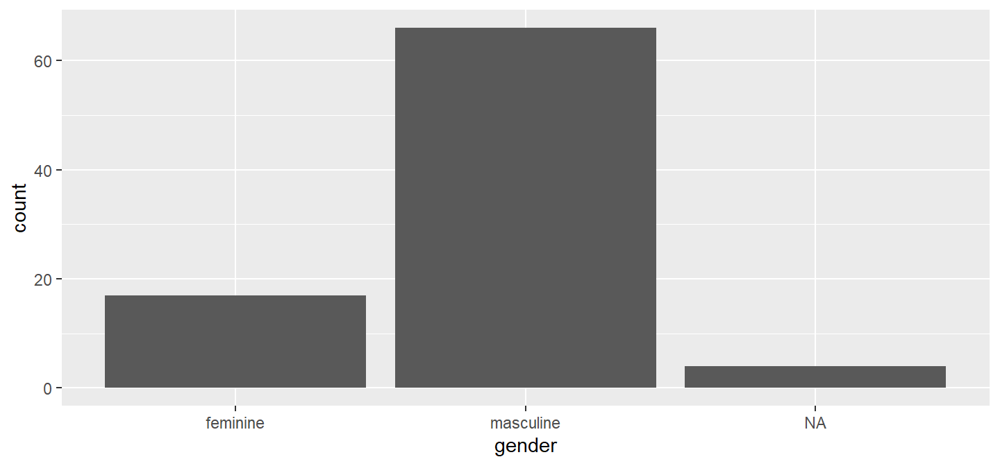

Gráficos Avançados
ggplot2
Algumas recomendações para como inserir gráficos com o
markdown
02 de abril de 2018
Aula de Hoje
Gráficos no R - Básico

Gráficos no R - Avançado

ggplot2
ggplot2é um pacote para criar gráficos de maneira declarativa baseada no livro The Grammar of Graphics de Leland Wilkinson.Você fornece os dados, informa como mapear as variáveis esteticamente, qual função primitica usar, e o pacote cuida do resto.
O pacote
ggplot2é parte da coleção de pacotestidyversepara ciência de dados.Você pode instalar todos os pacotes usando
install.packages("tidyverse"), ou apenasinstall.packages("ggplot2").
ggplot2
O jeito de usar o
ggplot2utiliza uma filosofia diferente de visualização.Na maioria das vezes:
vamos começar com
ggplot();depois fornecer os dados e o “mapeamento estético” (aesthetic mapping) com o comando
aes();podemos adicionar camadas (com
geom_point()ougeom_histogram()), alterar escalas (comscale_colour_brewer()), lapidar (comfacet_wrap()), sistema de coordenadas (comcoord_flip())…
ggplot2

Learning ggplot2
Recomendações do próprio site do ggplot:
“If you are new to ggplot2 you are better off starting with a systematic introduction, rather than trying to learn from reading individual documentation pages. Currently, there are three good places to start:
The data visualisation and graphics for communication chapters in R for data science. (…)"
Learning ggplot2

ggplot2
- Para começar a usar o pacote:
require(ggplot2)
- A estrutura dos códigos pode ser resumida em
ggplot(data = [dataset], aes(x = [x-variable], y = [y-variable])) + geom_xxx() + other options
geom_xxx()determina o tipo de gráfico que você irá produzir.
Exemplo - mpg
Dados:
mpg- dados de gasto de combustível para diferentes modelos de carro (carregado com o pacoteggplot2)algumas variáveis:
displ(cilindrada em litros),hwy(consumo em milhas por galão)descrição:
?mpg
Exemplo - mpg
- Vamos fazer um scatterplot com a variável
displno eixo x, ehwyno eixo y:
ggplot(data = mpg) + geom_point(mapping = aes(x = displ, y = hwy))
Exemplo - mpg
ggplot(data = mpg) + geom_point(mapping = aes(x = displ, y = hwy, color = class))
Exemplo - mpg
ggplot(data = mpg) + geom_point(mapping = aes(x = displ, y = hwy, shape = class))

Exemplo - mpg
ggplot(data = mpg) + geom_point(mapping = aes(x = displ, y = hwy), color = "blue")
Ótimo material extra
- Slides da aula de Visualização de Dados da disciplina de Data Science oferecida por Mine Çetinkaya-Rundel para graduação na Duke University.
Exemplo - Starwars

Exemplo - Starwars

Exemplo - Starwars
Variáveis adicionais:
- aesthetics: formato, cor, tamanho
Exemplo - Starwars
- faceting: gráficos menores com subsets dos dados de acordo com uma categoria

Exemplo - Starwars

Exemplo - Starwars
Exemplo - Starwars

Mais materiais
More by Jenny Bryan (University of British Columbia):
http://stat545.com/topics.html (Seção All the graph things)
http://stat545.com/block015_graph-dos-donts.html (Muito interessante!)
http://shiny.stat.ubc.ca/r-graph-catalog/ (Catálogo com vários exemplos de gráficos feitos no R)
Mais materiais